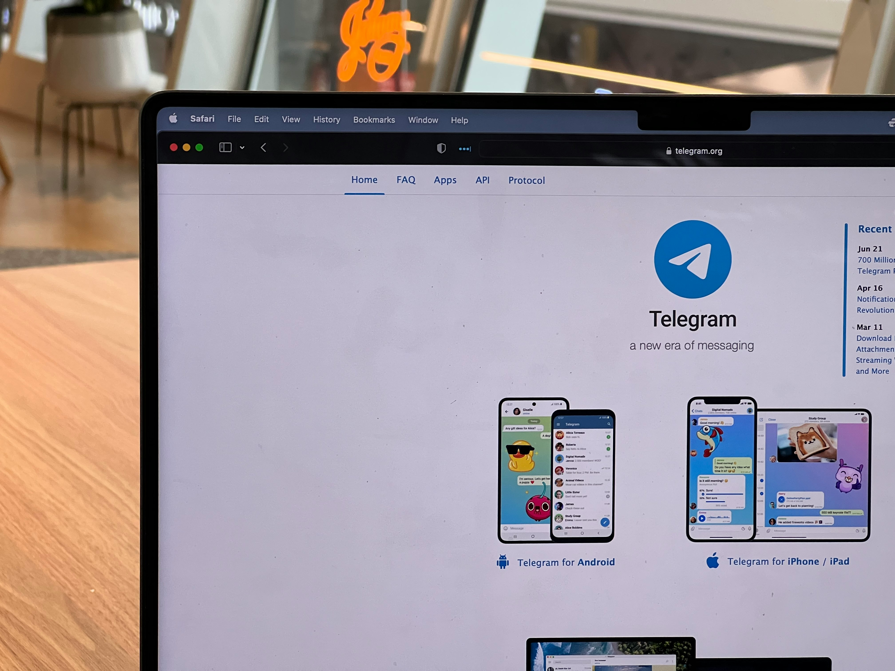
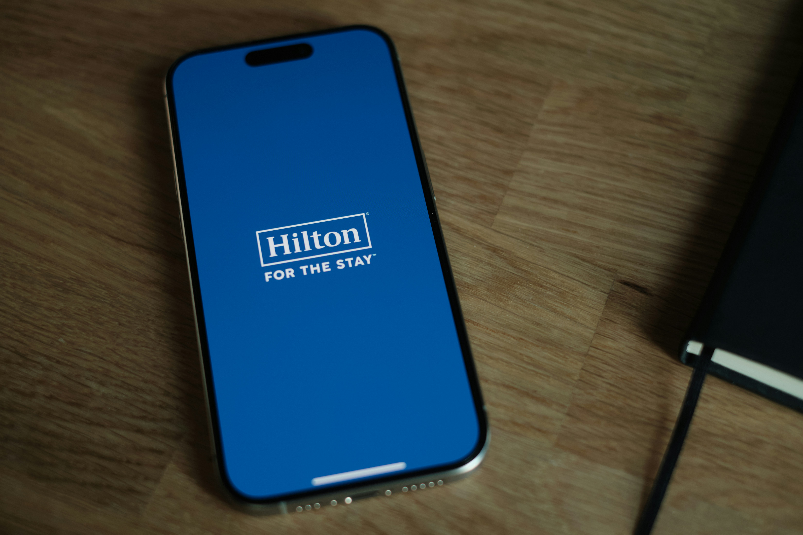
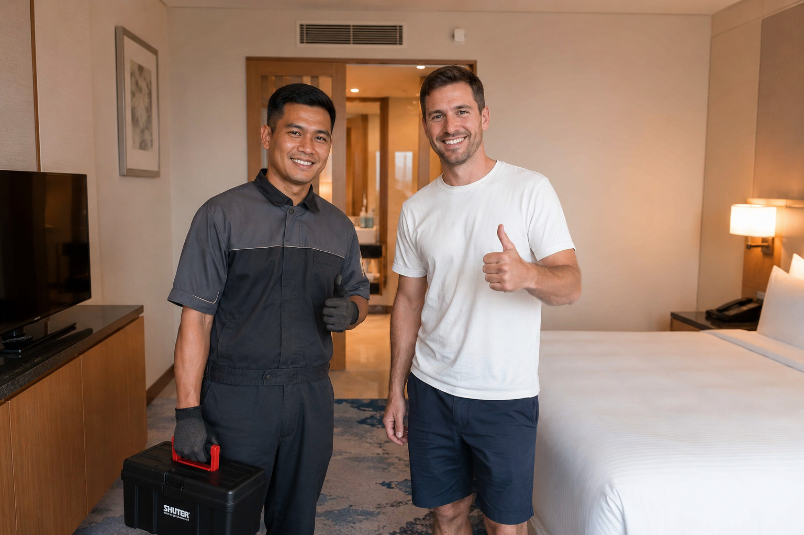

Concept 002 · Strategic Perspective · Signal Intelligence
The Quiet Signal
On listening to the few, rather than chasing the many. Global data belongs to everyone and no one — by the time a trend is noticed, it has already begun to change. This is an argument that proximity beats scale, proven through Glossier, a beauty brand built entirely from listening to its own comments section.
Open to the right collaborator
The Case Study
Marriott Bonvoy, Read Up Close
Why This, Applied
The essay argues that the nearest data point beats the loudest. Here's that argument run against something much bigger than a beauty blog. Not a mood board — the actual sequence: understand the business first, then find what its own target market is really saying online, then check what gets said about it in a competitor's comments — before a single visual gets made.
01 — The Business
"When we landed on the strategic insight that travel could actually shape you as a person, it opened up a new way of positioning travel as something more profound, authentic, and beyond just the stay."
— Marcus Yuen, Art Director, Wieden+Kennedy New York
02 — Is It Working?
0M+
Bonvoy members the emotional campaign is ultimately trying to deepen loyalty within.
0%
Of guest complaints logged on ComplaintsBoard in 2026 that went unresolved.
Two real numbers, same brand, same year. One is the scale the campaign is built for. The other is what's happening underneath it — including a July 2026 loyalty promotion criticised for confusing, unevenly applied eligibility.
03 — Online Conversations, the Target Market
This is where Bonvoy's own audience actually spends its attention — not on the film, but on the arithmetic of the loyalty program itself: fees, status thresholds, promo rules, and what happens when a stay goes wrong.

04 — Competitors & Their Comments
Marriott is still bigger — but the gap has been narrowing, and it shows up first in Hilton's own comparison threads, not Marriott's.

Found in a Hilton Comparison Thread
"This program used to feel worth it. The fees changed my mind — I'm moving my status to Hilton."
— the shape of the comment that keeps recurring under Marriott-vs-Hilton comparisons, not under Marriott's own posts
05 — The Curated Direction
The story it needs isn't a bigger film. It's proof of consistency, told in public, where the doubt already lives.
Not a rejection of the campaign — a redirection of the next one, based on where its own audience is actually standing.
06 — The Storyboard

01
Show the Fix, Not the Feeling
A real guest complaint, resolved on camera, posted where the complaint was made — not a cinematic vignette.
02
Answer Where the Doubt Lives
Response content placed directly under the comparison threads and forums where defection talk actually happens.
03
Loyalty Math, Made Honest
Plain-language content explaining fees, status thresholds and promo eligibility — the thing the audience is actually searching for.
04
The Follow-Up Film
Same cinematic quality as the hero campaign, but returning to a real guest a year later to show the consistency was kept.
The Case for Proximity
There is a meaningful difference between what is trending and what is true — true of your own audience, in their own words, at close range.
Trend reports arrive weekly. Dashboards refresh by the hour. A brand that isn't watching everything, everywhere, all at once, can feel in danger of vanishing — but the trouble with global data is that it belongs to everyone and no one. By the time it has been noticed, it has already begun to change. A brand chasing it is not building an identity; it is borrowing one, briefly, before the crowd moves on and takes the borrowed identity with it.
The most valuable data a brand possesses is not the loudest. It is the nearest.
One data point close to home will outlast a thousand borrowed from far away. The strategist's task is not to monitor the horizon more closely. It is to listen more carefully to what is already directly in front of them.
The Brand, in Brief
Glossier did not begin as a product line searching for a market. It began as a beauty blog whose comments section became the research department.
On Into The Gloss, the founder simply asked her own readers what they actually thought, wanted, and struggled with. The product line that followed wasn't built from runway trends or industry forecasting — it was built from what a specific, real, nearby community kept saying, again and again, in their own words.
It didn't ask what the beauty industry says is next. It asked what our audience keeps telling us, whether or not we're paying attention.
The Signal Was Never Loud
While the industry cycled through format after format, one brand's content held to a single emotional register throughout.
Skin first, makeup second. Real texture over retouched polish. The feeling of being more yourself, not less. The format changed constantly around them. The feeling never did. A brand that keeps asking "what content type is working right now" is optimising for something that expires. A brand that asks "what feeling is our audience actually responding to" is optimising for something that compounds.
Drag toward Signal — the noise thins out, one line at a time, until a single quiet one is all that's left. This is what listening for the nearest data point, instead of the loudest, actually feels like.
Dialing Into the Practice
What the quiet signal looks like operationally, for any brand willing to practise it.
- Treat proprietary feedback as the primary source, not the afterthought. Comments, returns, repeat purchases, direct replies — these are closer to the truth than any trend report, because they come from people who have already chosen you.
- Read for the feeling, not the format. Before asking whether to make a video or a carousel, ask what emotional response is actually landing. The feeling should choose the format, never the reverse.
- Let one strong signal outweigh a hundred weak ones. A single content view that reveals something true about your audience is worth more than a broad trend that applies to everyone and therefore no one in particular.
- Resist the pull of borrowed relevance. The instinct to jump on what's rising elsewhere is strong, but it is rarely built to last — because it was never yours to begin with.
Beyond Beauty
Glossier happens to make the case in skincare, but the principle travels.
Any brand sitting on its own comments, its own repeat customers, its own quiet signal — and choosing instead to watch the wider noise — is optimising for a relevance it will always be a step behind. The brands that endure are rarely the loudest listeners to the world. They are the closest listeners to their own.
The signal was never far away. It was simply quieter than the noise competing for your attention — and worth listening for anyway.
This one is open to the right collaborator